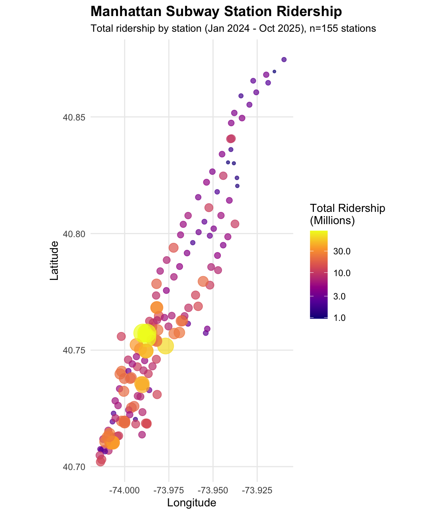

Data
We acquired four datasets for analyzing weather and event impacts on Manhattan subway ridership (2024-2025). Each presented unique technical challenges that required creative solutions.
MTA Subway Ridership
The Disaggregation Challenge:
The MTA ridership dataset is highly disaggregated to capture detailed fare collection patterns. Each hourly observation is broken down by:
- 11+ fare class categories: Full Fare, Senior/Disabled, Students (K-12 and college), Fair Fares (reduced-income riders), and various pass types (7-day, 30-day, unlimited)
- 2 payment methods: MetroCard (legacy magnetic stripe) and OMNY (contactless tap-to-pay)
This granularity creates a data explosion problem. For Manhattan’s 123 stations during a single week:
123 stations × 24 hours × 7 days × 11 fare categories × 2 payment methods = 227,304 records per week
For our complete 2024-2025 dataset (22 months ≈ 95 weeks), this would generate 21.6 million records—far exceeding the Socrata API’s 100,000-record pagination limit and creating unwieldy file sizes for analysis.
The Solution:
Since our research questions focus on total ridership rather
than fare type breakdowns, we leveraged the Socrata API’s server-side
aggregation capabilities. Using SUM() with
$group, we aggregated across all fare types and payment
methods before data transfer.
"$select" = "transit_timestamp, station_complex_id, station_complex,
borough, SUM(ridership) as total_ridership",
"$group" = "transit_timestamp, station_complex_id, station_complex, borough"This reduced records by 96% (from 21.6M to 1.92M), making monthly downloads feasible within API limits while preserving the station-hour granularity needed for our weather and event analyses.
This yielded 1,921,163 hourly observations across 123 Manhattan stations from 2024-01-01 to 2025-10-19.
# Daily trend (2024 only)
p_daily <- ridership |>
filter(year(date) == 2024) |>
group_by(date) |>
summarize(total = sum(total_ridership, na.rm = TRUE) / 1e6, .groups = "drop") |>
ggplot(aes(x = date, y = total)) +
geom_line(color = "#2E86AB", linewidth = 0.8) +
scale_y_continuous(labels = comma) +
labs(title = "Manhattan Subway Daily Ridership (2024)", x = NULL, y = "Daily Ridership (M)") +
theme(plot.title = element_text(size = 11))
# Hourly pattern
p_hourly <- ridership |>
mutate(weekday_type = ifelse(wday(date) %in% 2:6, "Weekday", "Weekend")) |>
group_by(hour, weekday_type) |>
summarize(avg = mean(total_ridership, na.rm = TRUE) / 1000, .groups = "drop") |>
ggplot(aes(x = hour, y = avg, color = weekday_type)) +
geom_line(linewidth = 1) +
scale_color_manual(values = c("Weekday" = "#2E86AB", "Weekend" = "#E63946")) +
labs(title = "Average Hourly Pattern", x = "Hour", y = "Avg Ridership (K)", color = NULL) +
theme(legend.position = "top", plot.title = element_text(size = 11))
# Top stations
p_top <- ridership |>
group_by(station_complex) |>
summarize(total = sum(total_ridership, na.rm = TRUE) / 1e6, .groups = "drop") |>
slice_max(total, n = 30) |>
arrange(total) |>
mutate(
# Truncate station names at first '(' for cleaner display
station_short = str_replace(station_complex, "\\s*\\(.*", ""),
# Make names unique by adding row number suffix if duplicates exist
station_short = make.unique(station_short, sep = " "),
# Use factor with levels in current order to preserve sorting
station_short = factor(station_short, levels = station_short)
) |>
ggplot(aes(x = total, y = station_short)) +
geom_col(fill = "#06A77D") +
scale_x_continuous(labels = comma) +
labs(title = "Top 30 Manhattan Stations", x = "Total Ridership (M)", y = NULL) +
theme(plot.title = element_text(size = 11), axis.text.y = element_text(size = 8))
p_top | (p_daily / p_hourly)
Weather Data
The NOAA API requires an authentication token, which we obtained from NOAA’s token request page. After receiving the token via email, we downloaded daily weather data for Central Park (located in Manhattan) covering 2020-2025. This provides consistent weather measurements applicable to all Manhattan stations.
Note: December 2024 data is currently unavailable from the NOAA API, creating a gap in the weather time series. All other months in the 2024-2025 study period have complete daily observations.
weather <- read_csv('data/weather/central_park_weather_wide.csv', show_col_types = FALSE) |>
mutate(date = as.Date(date))The dataset contains 1,642 daily observations with max temperature, precipitation, and snowfall.
# Temperature and precipitation time series
p_ts <- weather |>
filter(year(date) >= 2024) |>
select(date, TMAX, PRCP) |>
pivot_longer(cols = -date, names_to = "metric", values_to = "value") |>
mutate(metric = ifelse(metric == "TMAX", "Max Temp (°F)", "Precipitation (in)")) |>
ggplot(aes(x = date, y = value)) +
geom_line(data = \(x) filter(x, metric == "Max Temp (°F)"), color = "#E63946", linewidth = 0.6) +
geom_col(data = \(x) filter(x, metric == "Precipitation (in)"), fill = "#2E86AB", alpha = 0.7) +
facet_wrap(~metric, ncol = 1, scales = "free_y") +
labs(title = "Central Park Weather (2024-2025)", x = NULL, y = NULL)
# Seasonal summary
weather_summary <- weather |>
filter(year(date) >= 2024) |>
mutate(
season = case_when(
month(date) %in% c(12, 1, 2) ~ "Winter",
month(date) %in% c(3, 4, 5) ~ "Spring",
month(date) %in% c(6, 7, 8) ~ "Summer",
month(date) %in% c(9, 10, 11) ~ "Fall"
),
season = factor(season, levels = c("Winter", "Spring", "Summer", "Fall")),
month_abbr = month(date, label = TRUE, abbr = TRUE)
)
# Seasonal aggregations
seasonal_weather <- weather_summary |>
group_by(season) |>
summarize(
`Avg Temp (°F)` = mean(TMAX, na.rm = TRUE),
`Storm Days (≥1in)` = sum(PRCP >= 1, na.rm = TRUE),
`Heat Days (≥90°F)` = sum(TMAX >= 90, na.rm = TRUE),
.groups = "drop"
) |>
pivot_longer(cols = -season, names_to = "metric", values_to = "value")
# Plot seasonal summary
p_season <- seasonal_weather |>
ggplot(aes(x = season, y = value)) +
geom_col(aes(fill = season)) +
scale_fill_manual(
values = c(
"Winter" = "#457B9D", "Spring" = "#06A77D", "Summer" = "#E63946", "Fall" = "#F77F00"
)
) +
facet_wrap(~metric, scales = "free", ncol = 3) +
labs(title = "Seasonal Weather Summary", x = NULL, y = NULL) +
theme(legend.position = "none", axis.text.x = element_text(angle = 45, hjust = 1))
p_ts / p_season
Event Geocoding & Station Matching
A critical component of our analysis was linking textual event data to physical subway stations. The NYC Permitted Event Information dataset provides event locations as text strings (e.g., “5 AVENUE between 15 STREET and 16 STREET”) but lacks geospatial coordinates.
Methodology:
- Filtering: We first isolated “Large Events” (Parades, Street Fairs) in Manhattan.
- Geocoding: We used the
tidygeocoderpackage to convert text addresses into Latitude/Longitude coordinates.- Primary Service: ArcGIS (high accuracy for NYC street intersections).
- Fallback Service: OpenStreetMap (OSM) for failed queries.
- Spatial Matching: We performed a nearest-neighbor
spatial join using the
sfpackage.- For each geocoded event, we identified the nearest subway station complex.
- Threshold: Events were only linked if they occurred within 800 meters (approx. 0.5 miles) of a station.
Code Implementation:
# Pseudocode of our spatial matching logic
library(tidygeocoder)
library(sf)
# 1. Geocode event locations
events_geocoded <- events %>%
geocode(address = event_location, method = "arcgis")
# 2. Convert to Simple Features (sf) objects
events_sf <- st_as_sf(events_geocoded, coords = c("long", "lat"), crs = 4326)
stations_sf <- st_as_sf(stations, coords = c("longitude", "latitude"), crs = 4326)
# 3. Find nearest station within 800m
nearest_indices <- st_nearest_feature(events_sf, stations_sf)
distances <- st_distance(events_sf, stations_sf[nearest_indices,], by_element = TRUE)
# 4. Filter and Join
events_linked <- events_sf %>%
mutate(
nearest_station_id = stations_sf$station_complex_id[nearest_indices],
distance_meters = as.numeric(distances)
) %>%
filter(distance_meters <= 800)This process allowed us to move from a city-wide list of events to a precise, station-specific “Event Calendar,” enabling the localized “Blast Radius” analysis.
Data Wrangling Log
See the Code: For the complete, step-by-step R code used to geocode events and spatially join them to stations, please visit our detailed Data Wrangling Log.
Permitted Events Analysis
The NYC Permitted Event Information - Historical dataset (bkfu-528j) contains comprehensive event records but includes hundreds of thousands of small-scale activities (youth sports, film shoots, farmers markets) unlikely to significantly impact subway ridership.
Smart Filtering Strategy:
Since the dataset lacks attendance information, we filtered for large events (likely 100+ people) using event characteristics as proxies:
- Event types: Parades, Athletic Races/Tours, Street Events, Block Parties, Sidewalk Sales
- Street impact: Events requiring full street closures
- Exclusions: Youth/adult sports leagues, production events, small farmers markets
This filtering reduced from ~2 million total events to 149,524 large events across NYC.
events <- read_csv('data/events/nyc_large_events_2024_2025.csv', show_col_types = FALSE) |>
mutate(start_date = as.Date(start_date_time), end_date = as.Date(end_date_time))
events_analysis <- events |>
filter(!is.na(start_date)) |>
mutate(
month = month(start_date, label = TRUE),
year_month = format(start_date, "%Y-%m"),
borough = case_when(
str_detect(tolower(event_borough), "manhattan") ~ "Manhattan",
str_detect(tolower(event_borough), "brooklyn") ~ "Brooklyn",
str_detect(tolower(event_borough), "queens") ~ "Queens",
str_detect(tolower(event_borough), "bronx") ~ "The Bronx",
str_detect(tolower(event_borough), "staten island") ~ "Staten Island",
TRUE ~ "Other"
)
)Successfully downloaded 149,524 large events (Jan 2024 - Oct 2025), including 53,977 in Manhattan.
# Monthly time series by borough
p_events_time <- events_analysis |>
count(year_month, borough) |>
mutate(date = as.Date(paste0(year_month, "-01"))) |>
ggplot(aes(x = date, y = n, fill = borough)) +
geom_col() +
scale_fill_brewer(palette = "Set2") +
scale_x_date(date_labels = "%b %Y", date_breaks = "3 months") +
labs(title = "Large NYC Events by Borough (2024-2025)",
subtitle = "Strong seasonal pattern: summer/fall peaks, winter lows",
x = NULL, y = "Number of Events", fill = "Borough") +
theme(axis.text.x = element_text(angle = 45, hjust = 1), legend.position = "right")
# Top event types in Manhattan
p_event_types <- events_analysis |>
filter(borough == "Manhattan", !is.na(event_type)) |>
count(event_type, sort = TRUE) |>
slice_max(n, n = 8) |>
mutate(event_type = fct_reorder(event_type, n)) |>
ggplot(aes(x = n, y = event_type)) +
geom_col(fill = "#F77F00") +
scale_x_continuous(labels = comma) +
labs(title = "Top Event Types in Manhattan", x = "Number of Events", y = NULL) +
theme(plot.title = element_text(size = 11))
p_events_time / p_event_types
Station Locations
Station coordinates are already embedded in the ridership data, so we extracted unique station complexes with coordinates directly from the ridership API rather than seeking a separate geospatial dataset.
stations <- read_csv('data/stations/mta_station_complexes.csv', show_col_types = FALSE)
manhattan_stations <- stations |>
filter(borough == "Manhattan", !is.na(latitude), !is.na(longitude))We identified 476 unique station complexes across NYC, with 155 in Manhattan covering the entire borough from Battery Park to Inwood.
library(sf)
# Calculate total ridership by station
station_ridership <- ridership |>
group_by(station_complex_id, station_complex) |>
summarize(total_ridership = sum(total_ridership, na.rm = TRUE) / 1e6, .groups = "drop")
# Join with station coordinates
manhattan_stations_ridership <- manhattan_stations |>
left_join(station_ridership, by = c("station_complex_id", "station_complex")) |>
mutate(
longitude = as.numeric(longitude),
latitude = as.numeric(latitude)
) |>
filter(!is.na(total_ridership))
# Load NYC neighborhoods for map background
nta_url <- "https://data.cityofnewyork.us/api/geospatial/9nt8-h7nd?method=export&format=GeoJSON"
nyc_nta <- tryCatch({
st_read(nta_url, quiet = TRUE)
}, error = function(e) {
borough_url <- "https://data.cityofnewyork.us/api/geospatial/tqmj-j8zm?method=export&format=GeoJSON"
st_read(borough_url, quiet = TRUE)
})
# Filter to Manhattan
if ("borough" %in% names(nyc_nta)) {
manhattan_sf <- nyc_nta %>% filter(borough == "Manhattan")
} else if ("boro_name" %in% names(nyc_nta)) {
manhattan_sf <- nyc_nta %>% filter(boro_name == "Manhattan")
} else {
manhattan_sf <- nyc_nta
}
# Create static map
ggplot() +
geom_sf(data = manhattan_sf, fill = "gray92", color = "gray75", linewidth = 0.2) +
geom_point(
data = manhattan_stations_ridership,
aes(x = longitude, y = latitude, color = total_ridership),
size = 2.5,
alpha = 0.85
) +
scale_color_viridis_c(
option = "plasma",
name = "Total Ridership\n(Millions)",
trans = "log10",
labels = scales::comma
) +
coord_sf(
crs = 4326,
xlim = c(-74.02, -73.93),
ylim = c(40.70, 40.80)
) +
labs(
title = "Manhattan Subway Stations by Total Ridership",
subtitle = "January 2024 - October 2025",
x = NULL, y = NULL
) +
theme_minimal() +
theme(
axis.text = element_blank(),
axis.ticks = element_blank(),
panel.grid = element_blank(),
legend.position = "right"
)
Summary
Our integrated dataset provides comprehensive coverage of Manhattan subway ridership and its potential drivers:
Ridership: 1,921,163 hourly observations across 123 Manhattan stations (January 2024–October 2025), totaling over 1255 million rides. Peak stations like Times Square-42 St and Grand Central-42 St account for a substantial share of daily traffic.
Weather: 1,642 daily observations from Central Park (2020-2025), including 35 heat wave days (≥90°F) and 18 major storm events (≥1 inch precipitation) during our study period. Seasonal variation ranges from winter averages in the 30s-40s°F to summer peaks above 90°F.
Events: 149,524 large permitted events (parades, street fairs, athletic races) covering 2024-2025, with 53,977 in Manhattan. Events show strong seasonality (summer/fall peaks) and include major NYC happenings (NYC Marathon, street festivals, parades). Smart filtering excluded small-scale events (sports leagues, film shoots) to focus on activities likely to impact subway ridership.
Stations: Complete geospatial coverage of 155 Manhattan subway stations, enabling spatial analysis of ridership patterns and proximity-based event impacts.
All four datasets align temporally and spatially, providing comprehensive infrastructure for analyzing weather and event impacts on station-level subway ridership across Manhattan’s 22-month study period.
Download scripts: download_full_ridership_monthly.R,
download_historical_events_monthly.R,
download_noaa_weather.R